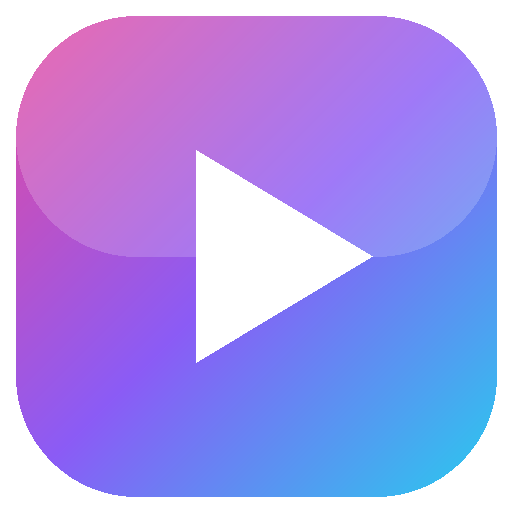

Clips itself
Reads the kill feed and HUD with on-device text recognition, then saves the moments you pick. Moments close together become one clip.

Clip EngineEarly access · Windows 10 and 11
Clip Engine watches your game and saves a clip around every kill, assist, death, revive and match end, at the full resolution and refresh rate of your monitor. No ads, no watermark, no Overwolf.
Version 0.4.1 · 39 MB · no account needed

Reads the kill feed and HUD with on-device text recognition, then saves the moments you pick. Moments close together become one clip.
Records at native resolution and refresh rate, encoded on your GPU (NVIDIA, AMD or Intel) with H.264 or HEVC.
Uses Windows screen capture. Nothing is injected into the game, so there is nothing for anti-cheat to flag.
Every detected kill and revive is marked in the player. Click one to jump straight to it.
Makes a copy under 10, 50 or 500 MB and puts it on your clipboard, ready to paste.
Everything is saved on your PC. No upload, no account and no tracking needed to use it.


Automatic clips today in Counter-Strike 2, Valorant, League of Legends, Fortnite, Apex Legends, Dota 2, PUBG, Marvel Rivals, Rainbow Six Siege, Call of Duty, ARC Raiders, Rocket League, Delta Force, The Finals, Overwatch and Battlefield 6, with more games every update. F8 saves the last 30 seconds in any game.
| Clip Engine | Medal | Outplayed | |
|---|---|---|---|
| Ads in the free app | None | Yes | Yes |
| Needs Overwolf | No | No | Yes |
| Every feature free | Yes | No, Premium plan | No, Premium plan |
Based on each product's public pages as of October 2026.
Every recording feature is free for everyone, with no plans, no ads and no watermark. Clip Engine is a passion project, and quality comes first.
Backing Clip Engine on Patreon keeps it growing. Patrons get a supporter key that works forever: extra colour themes, a supporter badge, and your name in the app's thank-you list.
Support on PatreonDownload the zip, unzip it anywhere and run ClipEngine.exe. Launch a supported game and it starts recording by itself.
Needs Windows 10 version 1903 or newer and a GPU with a hardware video encoder (almost any from the last ten years).
Capture and encoding run on your GPU's dedicated video hardware, and screen reading only looks at frames that are already finished. Most players won't notice it running.
Clip Engine never touches the game's memory or files. It records the screen the same way Windows' own tools do.
Early builds aren't code-signed yet. Choose More info → Run anyway. Signed builds are coming before the full launch.
Yes. Recording, automatic clips, the player and sharing are free for everyone, for good. Patreon supporters get a few cosmetic extras as a thank-you, nothing that changes your clips.
Automatic clips work in 16 games today: Counter-Strike 2, Dota 2, League of Legends and Rocket League through their official game events, and Valorant, Fortnite, Apex Legends, PUBG, Marvel Rivals, Rainbow Six Siege, Call of Duty, ARC Raiders, Delta Force, The Finals, Overwatch and Battlefield 6 by reading the screen. The F8 replay hotkey works in any game, and more games are added with each update.